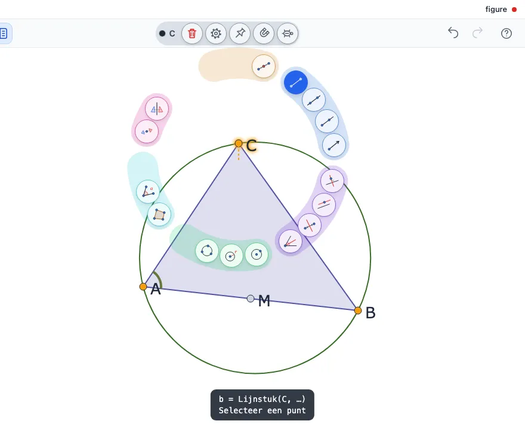

Construeren met gebaren
De figuur aantikken
| Aangetikte plek | Resultaat |
|---|---|
| een lege plek | vrij punt (op de vloer z = 0 in 3D) |
| bij een kruising | snijpunt van de twee objecten, die oplichten bij het aanwijzen (binnen 24 px) |
| een object | selectie en ring met zijn gereedschappen |
| een lege plek, ring open | de ring sluit, zonder punt te maken |
| een object, palet open | selectie zonder ring: het palet toont zijn gereedschappen |
Een tekst, een uitdrukking of een schuifknop wordt alleen geselecteerd: ze hebben geen ring.
De gereedschapsring

De ring toont alleen de gereedschappen die op het aangetikte object van toepassing zijn. Elk gereedschap heeft altijd dezelfde plaats; een niet-toepasbaar gereedschap laat zijn plaats leeg. Families, met de wijzers van de klok mee vanaf boven:
| Familie | Gereedschappen |
|---|---|
| Punten | punt op object, snijpunt, midden of middelpunt |
| Rechten | lijnstuk, rechte, halfrechte, vector |
| Constructies | loodlijn, evenwijdige, middelloodlijn, bissectrice |
| Cirkels | middelpunt en punt, middelpunt en straal, drie punten, bol (3D) |
| Veelhoeken, hoeken, meetkundige plaatsen | veelhoek, hoek, meetkundige plaats |
| Transformaties | punt- en lijnspiegeling, van een punt of een object (veelhoek, cirkel…) |
Een gereedschap aanwijzen toont in de aanwijzing de regel die
het zal schrijven en het verwachte argument:
b = Lijnstuk(C, …), „Selecteer een punt”. De acties
op het object zelf (verwijderen, instellen…) staan in de
contextzone van
de balk.
De argumenten selecteren
Is het gereedschap gekozen, dan volgt een voorbeeld van het object de aanwijzer en lichten de aanvaarde objecten op bij het aanwijzen. Waar een punt verwacht wordt, selecteer je naar keuze een bestaand punt, een object (er ontstaat een punt op object), een kruising (er ontstaat een snijpunt) of een lege plek (er ontstaat een vrij punt).
- Veelhoek: de hoekpunten, en dan opnieuw het eerste. Een veelhoek waarvan de hoekpunten vrije punten zijn, versleep je in zijn geheel, tenzij hij vastgezet is (Object vast in de eigenschappen).
- Cirkel (middelpunt en straal): met één klik gemaakt, straal van ongeveer 150 px afgerond op twee cijfers; de cirkel slepen verandert de straal.
- Meetkundige plaats: aangeboden bij een punt dat afhangt van een punt op object; met één klik gemaakt.
- Hoek en bissectrice: een punt van het eerste been, het hoekpunt, een punt van het tweede been.
Bijzondere gevallen
- Overlappende objecten: een menu geeft de regel van elk object; bij het aanwijzen licht het object op. Een punt gaat altijd voor, en een kruising geeft meteen het snijpunt.
- Met de vinger: tijdens een gereedschap toont de opgelegde vinger het voorbeeld zonder iets te verplaatsen en selecteert bij het loslaten. Je kunt op het pictogram drukken en in één gebaar naar het doel schuiven.
- Rand van het venster: de ring schuift op om helemaal zichtbaar te zijn, met het object verbonden door een stippellijn; hij volgt het object als de figuur beweegt.
- Verlaten: Esc of het ✕ van de aanwijzing.
- Verplaatsen: tijdens een gereedschap dient slepen om te mikken; de rechtermuisknop verplaatst altijd objecten en weergave.